Delivery Fees, Slots, Service Areas, Coupons + Deals
User Manual | 369ai
What this does
369 Mart Delivery & Pricing decides what a shopper's basket costs. It holds the delivery fees for each storefront, the delivery slots offered at checkout, the service areas (pincodes) you deliver to, and which branches can do fast Quick delivery. It also runs your two kinds of promotion: coupons, which a customer types at the basket, and deals, which simply make chosen products cheaper for everybody.
All the sums are done in the backend, not on the customer's phone. The shop app and the website ask the backend for the bill, so a customer can never give themselves a discount, and a change you save is the number the next customer is charged.
1. Set the rulesFees, slots, pincodes and Quick branches on the Delivery desk
→
2. Run promotionsCoupons customers type; deals that lower prices
→
3. Customer shopsPicks a pincode, a slot, maybe a coupon
→
4. Backend adds it upItems, delivery fees, slot fee and discount, one total
Before you start: The module arrives already holding sensible starting numbers: a Quick and an Express fee, six slots and three pincode areas (all listed in Part 1). Nothing changes for shoppers on the day it is installed. To change delivery you need the Owner or Manager role. Coupons and deals need the Salesperson right. Branches themselves are made in Inventory; this module only switches Quick on for them. A shop starts with no coupons and no deals.
Words you'll see
Word
What it means
Storefront
One of the two ways the shop sells. Quick is the fast grocery run (minutes); Express ships over days.
Delivery promise
The short line a customer reads, such as "Delivery in 13 mins".
Service area
A pincode, or the start of one, that you deliver to. "68" covers every pincode beginning with 68.
Slot
A delivery time a customer picks at checkout, shown as a small button (a "chip"), such as "Today 6 – 8 PM".
Branch
One of your warehouses. A branch with Quick on serves customers within its reach (in km) of its map pin.
Coupon
A code the customer types at the basket, such as WELCOME50, that takes money off the bill.
Deal
A price cut on chosen products for a time. The customer types nothing; the price on the product is simply lower.
Trash
Where a removed deal waits for a while before it is deleted for good.
How the manual is arranged
This module has a setting-up side and a daily side, and this manual follows them. Part 1 – Setting Up covers the Delivery desk: fees, service areas, slots and Quick branches, usually set once and adjusted now and then. Part 2 – Everyday Use covers the Deals and Coupons desks, what the customer sees, and the full list screens. Part 3 – Keeping It Secure & In Order covers the deals Trash, why delivery records are switched off rather than deleted, and who can do what.
Part 1 — Setting Up
Done by an Owner or Manager. The starting numbers already work, so change only what differs for your shop.
★The quick way: Delivery settings, everything on one page
Open Store → Delivery settings (in the staff console: Delivery → Settings, the first tab). Both show the same page and save the same records. From top to bottom:
Status — one pill per branch: Ready, Setting up (the shop is filling it in), Needs you (with what, and a Fix button) or Not delivering (no map pin, so it is not used for delivery). Set up automatically fills in at once what the shop can work out by itself.
How delivery decides — the settings below, said in plain sentences. Change something, press Save all, and the sentences change.
How we deliver — One area (each branch delivers near itself; farther goes Express) or Many branches (a branch out of stock is covered by another, and the Between-branches table says how long that takes).
Branches — one row per warehouse: map pin, Quick on/off, Quick up to (km) and Quick if possible up to (km), its WhatsApp delivery shop and riders. A branch's pin and Quick are written to its WhatsApp delivery shop too, so the two never disagree.
Between branches (Many branches only) — a table: the row is where the product is, the column is the branch nearest the customer. Each cell says Same day, Next day, In 2-3 days, In 3-4 days, In 5-7 days or Not delivered, with a Cargo tick for long trips. A cell marked auto was worked out from the distance; change it and it is yours.
Fees — Quick and Express: fee, free above, minimum order, the words the customer reads, the storefront name, and on/off.
Delivery slots — on or off for the company; Edit slots opens the slot list.
WhatsApp delivery — the promise for WhatsApp orders (Quick within so many hours if ordered before the cut-off hour; Express in so many days), Call a rider automatically when packed, and Ask for a review after delivery.
Advanced — service areas (only for addresses with no map pin) and a branch's own fees (only when one basket is split between branches of different companies).
Change what you need and press Save all at the bottom. Everything is saved together. If any value is wrong, nothing is saved and the page shows the message in red under that box; fix it and press Save all again. Discard puts the page back as it was.
How delivery decides: The customer's map pin is measured to every branch that has the item in stock. Within a branch's Quick up to distance it comes Quick, in about 10 minutes to pack plus 5 minutes a km. Up to Quick if possible it is promised Express and may still come Quick when a rider is free. Farther, the nearest branch that has it ships it: with Many branches, the Between-branches table says when it arrives; with One area it is plain Express.
It sets itself up: Make a new warehouse in Inventory and give its company an address. Within the hour (or at once with Set up automatically) the shop finds its map pin, switches Quick on at 5 km, adds its routes to the other branches from the distance, and makes its WhatsApp delivery shop. It never changes anything a person has set. Riders are the one thing it cannot add: the status asks for one.
1Where everything lives
Open 369 Mart from the main menu. This module adds these entries:
Store → Delivery settings — every delivery option on one page with one Save: start here (see "The quick way" below).
Store → Delivery — the Delivery desk, with four tabs: Fees, Slots, Service areas and Branches, for the detail (editing a slot, picking a pin on the map, adding service areas).
Sales → Coupons — the Coupons desk.
Sales → Deals — the Deals desk, with its Trash.
Advanced → Delivery & fees (all views), Service areas (all views), Delivery slots (all views), Coupons (all views) and Deals (all views) — plain lists of the same records, for grouping, filtering and export.
Each desk also has an All views button at the top that opens its full list. The staff console has matching screens. Both read the same records, so a change made in one shows in the other.
Good to know: A heading such as Store or Sales only appears for someone who can open something inside it. If a member of staff cannot see Delivery, Coupons or Deals, check their role (Part 3).
2Set the delivery fees
Open Store → Delivery. The Fees tab shows one card per storefront, Quick and Express. Each card has an on/off switch (press Save to apply it) and five boxes:
Shown as — the word the app puts on the basket, such as "Quick".
Delivery promise — the line under the basket heading, such as "Delivery in 13 mins". A service area with its own promise overrides it.
Minimum order — the smallest basket you accept. 0 means no minimum.
Free delivery above — once that storefront's items reach this amount, its delivery is free. 0 means delivery is never free.
Delivery fee — charged once per storefront when its items are below the free-delivery amount.
Under the boxes the desk writes what the customer will see in a sentence, for example "Under 499 the basket is charged 30 — above it, nothing." When you change a box, Unsaved changes appears; press Save Quick or Save Express to keep it.
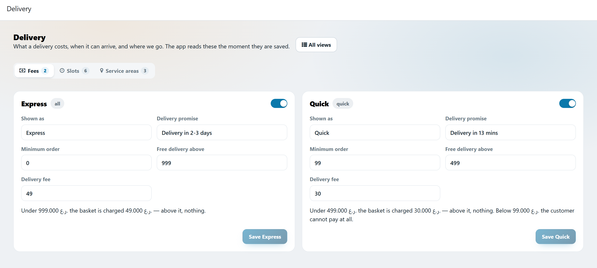
Figure 1 — The Delivery desk on its Fees tab: an Express card and a Quick card, each with an on switch, the five boxes, the sentence that explains them, and its own Save button.
The starting numbers are: Quick — Delivery in 13 mins, minimum 99, free above 499, fee 30. Express — Delivery in 2–3 days, minimum 0, free above 999, fee 49.
Important: A basket that holds both Quick and Express items can pay both fees, each judged on its own storefront's items. The bill checks the minimum for Quick only: if the Quick items come to less than the Quick minimum, the basket cannot be ordered.
Watch out: Turning a storefront's switch off makes the desk warn "… is switched off - nothing from it can be bought." Use it only when you really mean to stop that storefront.
3Mark the places you deliver (Service areas)
Open the Service areas tab and press New area, or Edit on a row. Fill in:
Pincode — digits only. A full pincode (682016) or the start of one (68). Spaces are removed for you. Each pincode can be listed only once.
Area — a name for your own use, such as "Kochi". Customers never see it.
Quick delivery — on: the fast grocery run reaches this area. Off: Express only.
Express delivery — on: items that ship over days reach this area.
Delivery promise — what a customer here is told, such as "13 mins" (the default for a new area).
When a customer enters a pincode, the most specific row wins: 6820 beats 68, and an exact pincode beats both. So a city can have its own promise inside a region that already has one.
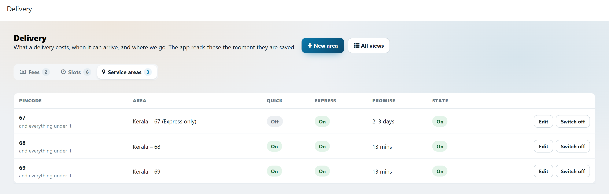
Figure 2 — The Service areas tab with the three starting areas: 67 (Quick off, Express on, 2–3 days) and 68 and 69 (both on, 13 mins). Each shows "and everything under it" because it is the start of a pincode.
Watch out: Switch both Quick and Express off and that pincode is told "We don't deliver to this pincode yet." With no area on the list at all, every pincode gets that answer, and the desk warns you.
4Set up delivery slots
Open the Slots tab. Each row is one chip on the checkout's slot step, with its Chip wording, Storefront, Kind, When, Fee, Cap (∞ means no limit) and State.
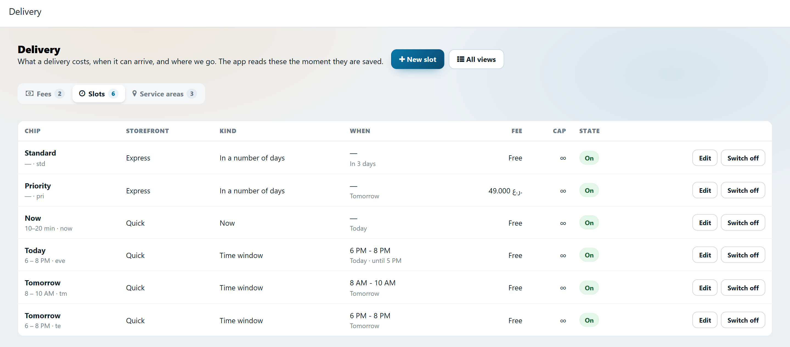
Figure 3 — The Slots tab with the six starting slots: Standard and Priority for Express, and Now, Today 6 – 8 PM (until 5 PM), Tomorrow 8 – 10 AM and Tomorrow 6 – 8 PM for Quick. Each row has Edit and Switch off.
Press New slot, or Edit on a row, and fill in:
Heading — the bold line on the chip, such as Today, Tomorrow or Priority. Required.
Detail — the small line, such as "6 - 8 PM". For an "In a number of days" slot the date is filled in for you.
Confirmation line — what the order says afterwards. Left empty, the shop writes it from the heading and the window.
Storefront — Quick or Express.
Kind — Now (the next rider out), Time window (a From–To window) or In a number of days.
Key — a short name the app and every order use for this slot, such as now, eve, tm, std. Asked for only on a new slot; it cannot be changed afterwards.
Order in the list — lower numbers come first (default 10).
From / To — Time window only. Hours are numbers: 18 is 6 PM, 18.5 is 6:30 PM. The time is shown beside the label as you type.
Days ahead — 0 is today, 1 is tomorrow. For an Express slot, how many days the delivery takes.
Stop offering after — for a same-day slot, the time after which it is hidden. 17 hides it after 5 PM; 24 (the default) never hides it.
Extra fee — added to the bill when this slot is chosen, such as 49 for Priority.
Orders per slot — how many orders the slot takes per day. 0 means no limit. Once full, it is no longer offered for that day.
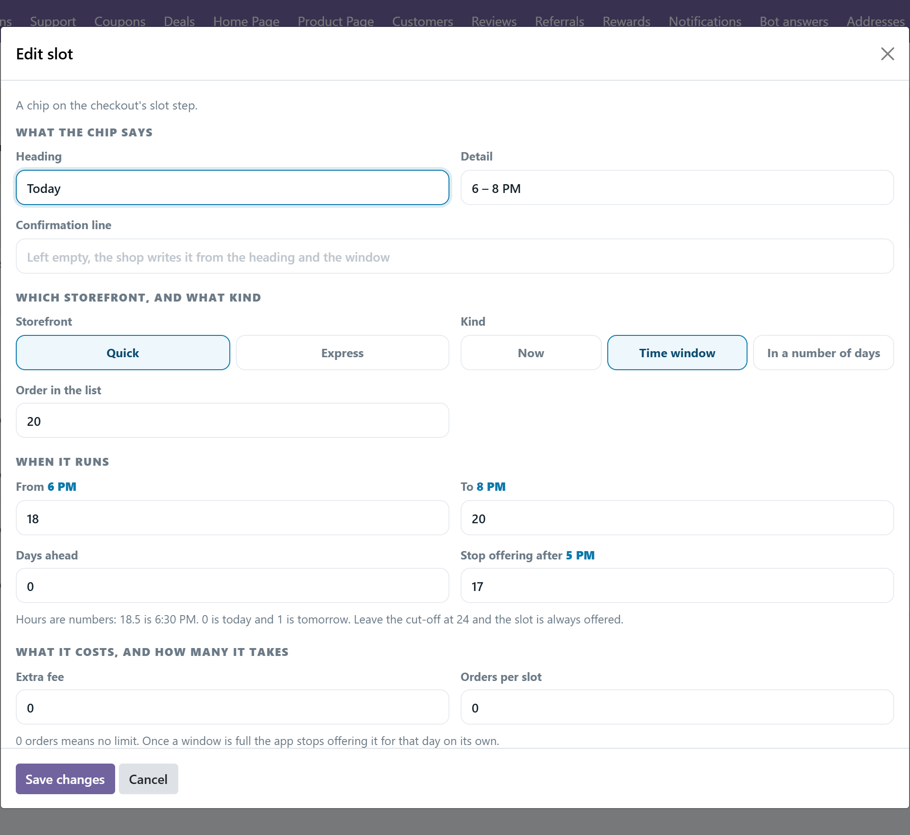
Figure 4 — The Edit slot dialog for the Quick "Today" slot: Detail 6 – 8 PM, Kind Time window, From 18 (6 PM) To 20 (8 PM), Days ahead 0, Stop offering after 17 (5 PM), Extra fee 0, Orders per slot 0.
Tip: The desk warns "No slot is open for Quick or Express…" when a storefront has no slot switched on. That storefront then has nothing to offer at checkout, so fix it at once.
5Turn on Quick delivery at your branches
Open the Branches tab. It lists every warehouse in every company, with its Company, Map pin, Quick state and Reach. Quick on / Quick off flips the switch in one click; Edit opens the full settings.
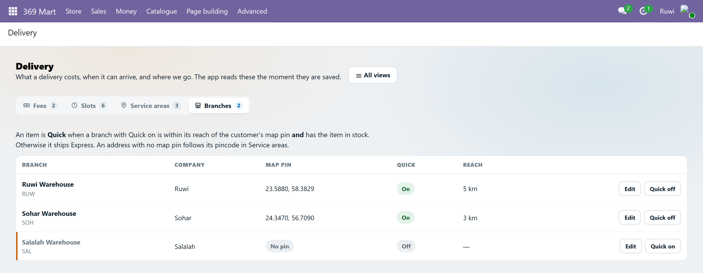
Figure 5 — The Branches tab: Ruwi Warehouse (pin set, Quick On, 5 km) and Sohar Warehouse (pin set, Quick On, 3 km); Salalah Warehouse has No pin and Quick Off. The note above the table explains the Quick rule.
In the Quick delivery from … dialog, set:
Quick delivery — on: this branch delivers Quick near it. Off by default.
Reach (km) — how far Quick reaches, in a straight line from the branch. 0 means nowhere. Roads are longer, so set it a little under what a rider covers in the Quick time.
Latitude / Longitude — where the branch is. In Google Maps, right-click the branch and click the numbers at the top to copy them, then paste both into Latitude; the desk splits them for you.
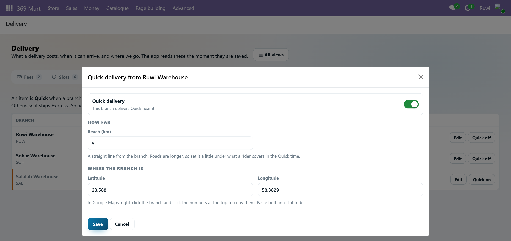
Figure 6 — The "Quick delivery from Ruwi Warehouse" dialog: Quick delivery switched on, Reach 5 km, and the branch's latitude and longitude.
How the backend decides, line by line, whether an item is Quick or Express:
Situation
Result
The product has its own delivery promise in the catalogue
Always Express.
The address has a map pin and at least one branch is ready for Quick
Quick if a branch within reach has enough stock of that item (the size or colour picked), checking the nearest first; otherwise Express. Items not tracked in stock count as available.
The address has no map pin, or no branch is ready
The pincode's service area decides: Quick on gives Quick, Quick off gives Express.
No address yet, or no area covers the pincode
The product decides, as before (Quick unless it carries its own promise).
Watch out: A branch with Quick on but no map pin or no reach shows Not ready, and the desk warns that it "delivers Quick to nobody". Add the pin and a reach above 0.
Good to know: Until a single branch is ready, nothing changes: pincodes and products decide as they always did. Switching Quick on is not a day when every basket turns Express. The bill also tells the app how many items moved to Express and why (no Quick branch close enough, not in stock nearby, or an Express-only pincode).
Part 2 — Everyday Use
The Deals and Coupons desks, used by whoever runs promotions. Both live under 369 Mart → Sales.
1The Deals desk
Open Sales → Deals. A deal is a price cut on the products you pick, for as long as you say. Shoppers see the lower price on the product card, in the basket and on the order; they type nothing.
Tile
What it shows
All deals
Every deal not in the Trash (the default view).
On right now
Deals switched on and inside their dates.
Starting later
Deals switched on, not running, with a start date.
Switched off
Deals you have turned off.
Products on offer
How many products a running deal lowers right now (a count only).
Each card shows the deal's name and state, what it takes off, how many products, any "never below" price, its note, and up to three products with the old price struck through beside the new one. Tap a card to edit it. Switch off / Switch on pauses it; Remove sends it to the Trash (Part 3).
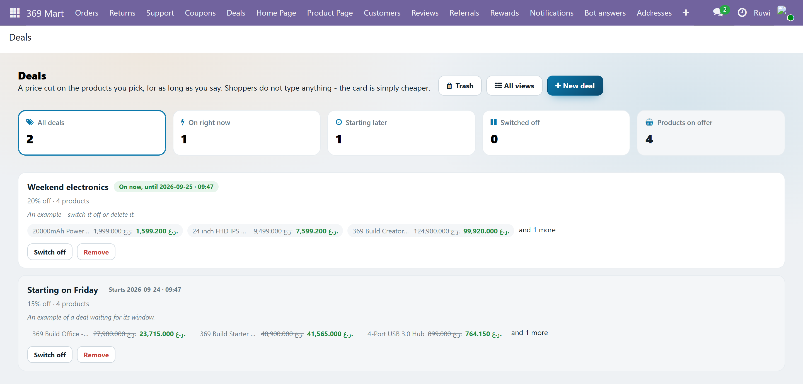
Figure 7 — The Deals desk: the four tiles plus Products on offer, a running 20% deal ("On now, until …") and a 15% deal waiting to start, each listing products with old and new prices.
2Create or change a deal
Press New deal, or tap a card. Fill in:
Name — what the deal is for, such as "Diwali weekend". Staff see it; shoppers see only the lower price.
Note — a line for whoever opens this in six months.
Discount — Percentage off (the default) or Amount off.
Per cent off / Amount off — a percentage must be between 1 and 90; an amount must be above 0.
Never below — a price the deal will not take a product under. 0 for no floor. A deal can never make anything free.
Starts / Ends — date and time. Leave them empty and the deal runs as soon as it is on, until you switch it off.
Products — type in Search the catalogue (published products only) and click a result to add it; click × on a chip to take it out.
Create deal (or Save changes) works once there is a name, at least one product and an amount above 0.
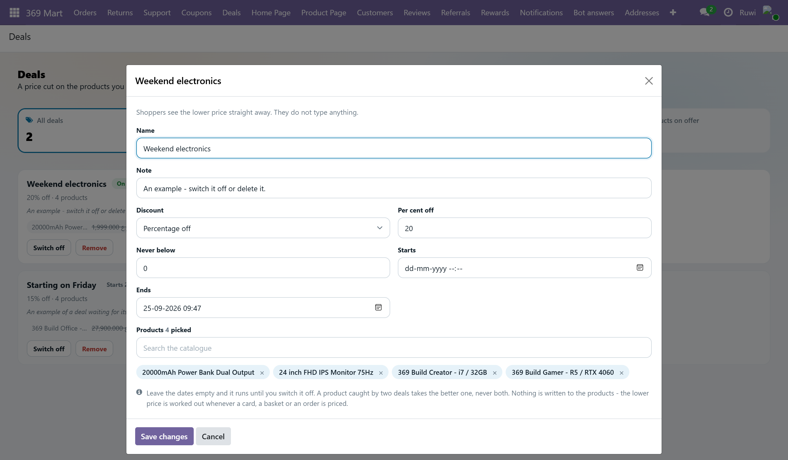
Figure 8 — Editing the "Weekend electronics" deal: Percentage off, 20 per cent, no floor, no start date, an end date, and four products picked.
Good to know: Nothing is written to the products. The lower price is worked out whenever a card, a basket or an order is priced, so ending or switching off a deal puts every price back on its own. A product caught by two running deals takes the better one, never both.
3The Coupons desk
Open Sales → Coupons. It answers "which codes work right now, and why the others do not". The tiles at the top are also filters:
Tile
What it shows
All coupons
Every coupon, including switched-off ones.
Working now
Codes a customer can use today.
Switched off
Codes you have paused.
Nearly used up
Working codes that have used 90% or more of their total uses.
Times redeemed
Uses across every code, ever (a count only).
Use the search box (A code, a title or a note) to find one. Each card shows the code, the title, a Working pill or the reason it is not working, what it takes off, the minimum spend, any per-customer limit, the note, a progress bar when there is a total limit, and the uses so far ("3 of 100 used"). The buttons are a switch, Edit, Copy (copies the code) and Delete.
4Create or change a coupon
Press New coupon, or Edit on a card. Fill in:
Code — what the customer types, such as WELCOME50. Always saved in capitals; the customer's typing ignores case. Each code can exist only once.
Title — the bold line the customer reads, such as "50 off your first order". Required.
Note — the small line shown under the title (the full list calls it Small print).
Discount — Percentage off, Flat amount off (the default) or Free delivery.
Per cent off / Amount off — a percentage must be above 0 and at most 100; a flat amount must be above 0.
At most — percentage only: caps the discount. 0 for no cap.
Only over — the basket must reach this before the code works.
Who may use it — Anybody with the code (the whole basket), Quick items only or Express items only. With a storefront chosen, the minimum and the percentage are measured on that storefront's items only.
Starts / Ends — optional dates. The end date cannot be before the start date.
Times in all — total uses across all customers. 0 means no limit.
Times per customer — stored on the coupon and shown on its card. 0 means no limit.
Working now — the on/off switch.
Watch out: Despite its hint ("A line for whoever opens this in six months"), the coupon Note is shown to shoppers under the title. Write it for customers, such as "Up to 60 · Quick items above 199".
Tip:Save stays grey until there is a code, a title and an amount above 0. For a Free delivery coupon the amount is not used, but enter any number above 0 so you can save.
5What the customer sees
From the shop's side, this is what the backend gives the shop app and the website:
Pincode check — the customer enters a pincode (at least 3 digits). They are told whether you deliver, whether Quick is available, and the delivery promise, or "We don't deliver to this pincode yet."
The basket — items, the MRP saving, each storefront's delivery fee, any coupon and the total. A customer below the Quick minimum cannot order. A product that has gone or been unpublished is listed so the app can say which line vanished.
Coupons — working codes are listed with their title, note and minimum; for each, the basket shows what it would save or how much more to spend.
Slots — the switched-on slots that are still open today and not full. A chosen slot's extra fee is added to the bill.
Deals — the lower price on the card, in the basket and on the order, with nothing to type.
Important: A discount can never exceed the bill: no coupon ever hands money back, and the total never goes below zero.
6The full lists (all views)
The desks deliberately leave out grouping, filtering and export. For those, use All views on a desk, or the (all views) entries under 369 Mart → Advanced. Delivery & fees (all views) is edited right in the list, and has a hidden Carrier column for choosing which carrier actually ships an order.
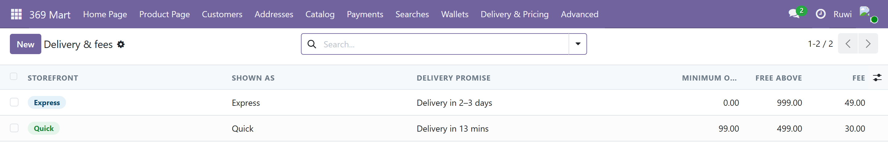
Figure 9 — The Delivery & fees list: one row each for Express and Quick, with Shown as, Delivery promise, Minimum order, Free above and Fee.
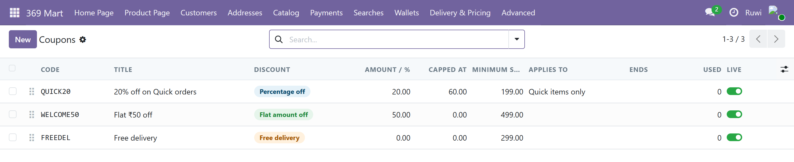
Figure 10 — The Coupons list with three example codes (QUICK20, WELCOME50, FREEDEL): Discount, Amount / %, Capped at, Minimum spend, Applies to, Used, and a Live switch. Rows can be dragged to reorder.
7Deals in the full list and form
Deals (all views) opens filtered to On right now. Remove the filter to see all; Switched off and grouping by Discount are in the search options. Running deals show in green. The form shows the same fields as the desk under The cut and When, an On now ribbon while it runs, and the products on a Products tab.
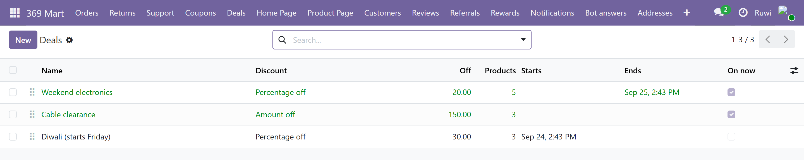
Figure 11 — The Deals list: two running deals in green (a percentage and an amount off) and one waiting to start, with Discount, Off, Products, Starts, Ends and On now.
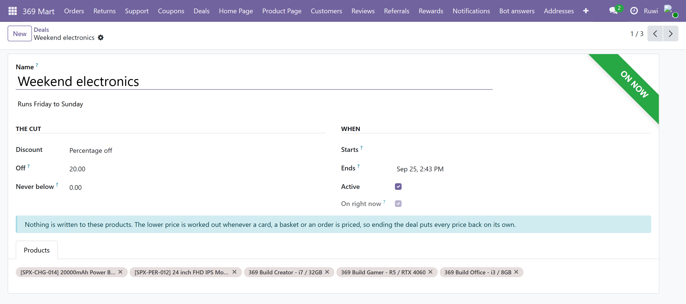
Figure 12 — A deal's form with the green "On now" ribbon, The cut and When sections, the note that nothing is written to the products, and five products on the Products tab.
Part 3 — Keeping It Secure & In Order
1Removing and restoring deals (the Trash)
Pressing Remove on a deal asks first, then moves it to the Trash. It stops discounting at once. Press Trash at the top of the Deals desk to see removed deals, with when each was removed and how many days it has left. From there:
Put back — returns the deal exactly as it was, switched off if it was switched off.
Delete for good — removes it now. Orders already placed keep what they were charged.
A removed deal waits 30 days, then a daily clean-up deletes it. If the home page module is installed, its Keep removed items for (days) setting is used instead; 0 there means keep until you delete it.
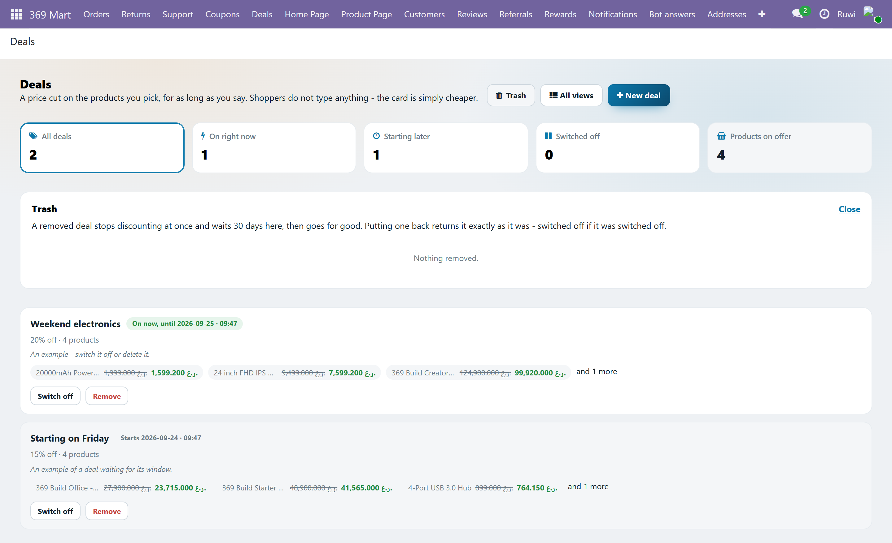
Figure 13 — The Trash panel open above the deal cards, explaining the 30-day wait and showing "Nothing removed."
2Switch off rather than delete
Nothing on the Delivery desk deletes. Fees, slots and areas are referred to by orders that have already gone out, so each is switched off instead and can be put back. Switching off a slot asks first; orders already booked into it keep their slot. Switching off an area tells customers there that you do not deliver to them yet; orders already placed are not affected.
A coupon can be deleted only if nobody has used it. Once used, it belongs to those orders: the desk says "This code has been used … times, so it belongs to those orders now. Switch it off instead." The Used count is counted from orders and cannot be edited.
3Who can do what
Role
What they can do
Owner
Everything on the Delivery desk, plus the delivery, slot and service-area lists under Advanced. Coupons and Deals need the Salesperson right as well.
Manager
Opens the Delivery desk: edits the fees, adds and edits slots and areas, and sets Quick on branches. Cannot add a new storefront rule. Coupons and Deals need the Salesperson right as well.
Salesperson
Full use of the Coupons and Deals desks and their lists.
Packer, Accountant, Rider (any Internal user)
Can read these records but has no menu here and changes nothing.
Good to know: A Manager counts as a Website designer, and an Owner as an Administrator (Settings). Those are the rights the Delivery menu checks.
4Prices and privacy
Every total, fee and discount is worked out in the backend. The customer's phone only shows the result, so a code's discount cannot be changed from the browser. Shoppers are sent a coupon's code, title, note, storefront and minimum spend, but never how often it has been used or its limits. Staff screens get those numbers.
Status reference — coupons
State
Meaning
How to change it
Working
On, inside its dates and not used up.
—
switched off
Working now is off.
Flip the switch on the card.
starts …
On, but its start date is still ahead.
Wait, or edit Starts.
ended …
On, but its end date has passed.
Edit Ends.
used up
Used as many times as Times in all allows.
Raise Times in all, or set it to 0.
Status reference — deals
State
Meaning
How to change it
On now
Switched on and inside its dates; prices are lower ("On now, until …" when it has an end).
—
Starts …
Switched on, waiting for its start.
Wait, or edit Starts.
Finished
Switched on, but its end has passed.
Edit Ends, or remove it.
Switched off
Paused by you. Prices are back to normal.
Switch on.
In the Trash
Removed; never discounts.
Put back from the Trash.
Delivery desk pills
Pill
Meaning
How to change it
On / Off (slots, areas)
Offered to customers, or switched off.
Switch off / Put back.
On / Off (branch Quick)
The branch does, or does not, deliver Quick.
Quick on / Quick off.
Not ready
Quick is on but the branch has no map pin or no reach.
Edit: add Latitude, Longitude and a Reach above 0.
No pin
The branch has no map location yet.
Edit and paste its pin.
Quick tips
A mixed basket can pay both the Quick and the Express fee; each is waived on its own free-delivery amount.
For pincodes, the most specific row wins: 6820 beats 68.
Choose a slot's Key with care; it cannot be changed after the slot is made.
Hours are numbers: 18.5 is 6:30 PM, and a cut-off of 24 never hides the slot.
A branch needs Quick on, a map pin and a reach above 0, or it delivers Quick to nobody.
The coupon Note is shown to customers, so write it for them.
Switching a deal off puts every price back at once; nothing was written to the products.
Watch the Nearly used up tile: those codes are about to start refusing customers.
If something goes wrong
What you see
What to do
A customer says a coupon does not work
Open Sales → Coupons and read the card's pill: switched off, starts, ended or used up. Also check Only over and Who may use it: the minimum may be measured on Quick or Express items only.
"There is already a coupon with the code …"
Codes are unique, switched-off ones included. Pick another code, or edit and switch the existing one back on.
A coupon will not delete
It has been used, so it belongs to those orders. Switch it off instead.
A customer is told "We don't deliver to this pincode yet"
On Delivery → Service areas, add the pincode (or its start), or make sure its row is on and has Quick or Express switched on.
Every item ships Express
On Delivery → Branches, look for Not ready or No pin, and check the reach. The item must also be in stock at the nearby branch. A product with its own delivery promise is always Express.
A slot is missing at checkout
It may be off, past its Stop offering after time for today, or full (Orders per slot). Check its row on Delivery → Slots.
A deal's price is not showing
On Sales → Deals, check the pill: Starts …, Finished or Switched off. Make sure the product is in the deal. If two deals cover it, the better price wins.
"A percentage deal has to be between 1 and 90"
Deals cannot take more than 90% off. Use a smaller number, or an Amount off with a Never below price.
A saved fee still shows the old line in the app
The app may reuse its last answer for a short time, set by Remember for (seconds) in 369 Mart Settings (60 by default). The bill's total is always worked out fresh.